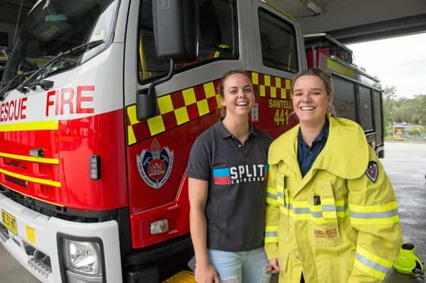

Not satisfied with regular SJW-enabling and social engineering, Australia’s biggest fire department has implemented a 50% female hiring quota. Unfortunately for residents of New South Wales, Australia’s most populous state and the home of Sydney, this is only going to increase property destruction, not to mention cause serious injuries and deaths.
Feminists, god bless them, have been appalled by the proportion of female firefighters, which presently hovers around 3-5% for Australia’s eight mainland states and territories (for good reason). The solution is one for the ages, as former Australian socialist leader, now anti-SJW crusader Mark Latham has revealed:
It wants new recruits to be able to “drag a collapsed firefighter to safety on their own”, yet to accommodate female applicants, the Physical Aptitude Test has been reduced from a 90kg [200lb] dummy drag over 20 metres [66 feet] to the relatively easy task of carrying a 30kg [65lb] weight for 10 metres [33 feet].
The price for gender “equality” has been revealed: female firefighters are now expected to carry the same load for the same distance as a 45-year-old suburban housewife bringing groceries to her car. If they do this, they can get the job ahead of a man who can carry twice or thrice that weight for much longer distances.
America may have spawned Evergreen State College and other SJW factories of late, but Australia is rapidly edging ahead of the US for the title of the most cucked English-speaking nation. And, as we know from so many other arenas, one Western country’s ridiculous social experiments tend to spread to all other Western countries. So watch out Britain, Canada, and the US.
An insult to every qualified firefighter who ever lived and a risk to everyone finding themselves in danger
Female feelings are being put ahead of people’s lives across the Western world when it comes to fire department hiring policies.
When I think of hardworking firefighters, I remember the brave–and doomed–members of various New York City firehouses ascending the stairs of the two World Trade Center towers on September 11, 2001. The professionalism of these men (all lost FDNY personnel were male that day) has already been insulted by their Department’s mollycoddling of incompetent female recruits who persistently fail fitness tests. The same can be said of fire departments across the Western world, probably all of which have been assaulted by some form of SJW madness.
An even bigger problem will loom if the FDNY and other organizations opt for a New South Wales-style quota. Like New South Wales, New York City has millions of people, many of them living in densely-populated apartment blocks or mega-sized residential towers that make it difficult to escape blazes. The potential for horrific casualties in highly urbanized areas is going to skyrocket when hiring policies are geared towards female feelings over professionalism and physical requirements. This process is now in full swing.

They’re going to carry you out of your burning building?
Fire brigades’ effectiveness and cohesion will be progressively destroyed if too many years’ worth of subpar recruits are admitted, whether in New South Wales or elsewhere. Moreover, once standards are lowered, it is hard to see them being increased again, until people really start to die. Even if they do die, do not expect the authorities to throw the blame at the quality of any (female) recruits.
The former socialist leader Mark Latham, whose about-turn from leftwing politics should inspire all of us, compared the decision to enact quotas in New South Wales to Orwellian Newspeak. He called out how a fire chief demanding a 50% forced representation of women could ever say:
Merit selection will determine the best candidates for the job, regardless of gender, but we will deliver equity in the number of male and female firefighters.
Officials aren’t even trying anymore.
Our safety is being undermined
For those of you not fully up to speed on the topic, the video above is a prime example from Sweden about the end result when you put unqualified females into public safety positions. If the man the female police officers tried to restrain had wanted to kill them, he could have done it easily.
Like the horrendous decision to hire women half the time for New South Wales Fire and Rescue roles, Sweden has repeatedly favored women in police capacities, to the point of deliberately taking in more women than men. When similar stories for the emergency services in England, the US, Canada, France, and Germany are considered, we have a storm brewing.
Return Of Kings is replete with cases like these, including my article earlier this year about how the current proportion of female police officers and soldiers endangers the public. The soldier successfully disarmed at Orly Airport outside Paris was, of course, a woman. And the firefighters most likely to be “disarmed” by the demands of fighting fires and rescuing people are going to be female ones.
Now people will have to take their fire safety risk even more seriously than before and act independently of government support in times of emergency. With many tens of pounds of equipment already strapped to firefighters’ bodies, is anyone going to expect more than a tiny fraction of these female recruits to be able to carry them out of a burning building and save their lives?
Read More: Female Police Officers And Soldiers Reduce Everyone’s Safety